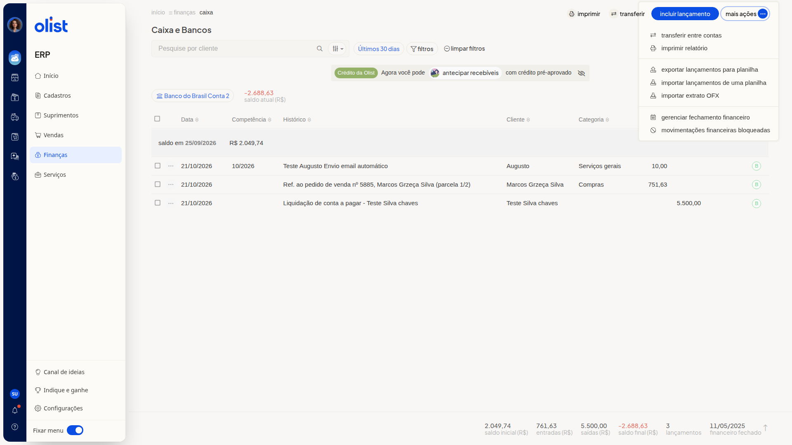

Como exportar lançamentos para planilha no Caixa e Bancos
Descrição
A tela Caixa e Bancos do ERP da Olist lista os lançamentos da conta selecionada. Nela, você pode exportar lançamentos para planilha.
O acesso é por Finanças > Caixa, em Mais ações > Exportar lançamentos para planilha.
Pré-requisitos
- Acesso ao menu Finanças > Caixa.
- Permissão de Caixa para acessar a tela Caixa e Bancos.
- Permissão de importação de registros. A opção Exportar lançamentos para planilha só aparece com essa permissão.
Instruções
-
Acesse Finanças > Caixa para abrir a tela Caixa e Bancos.
-
Clique em Mais ações.

-
Clique em Exportar lançamentos para planilha.
Links relacionados
Se precisar de ajuda com a exportação, fale com o suporte.